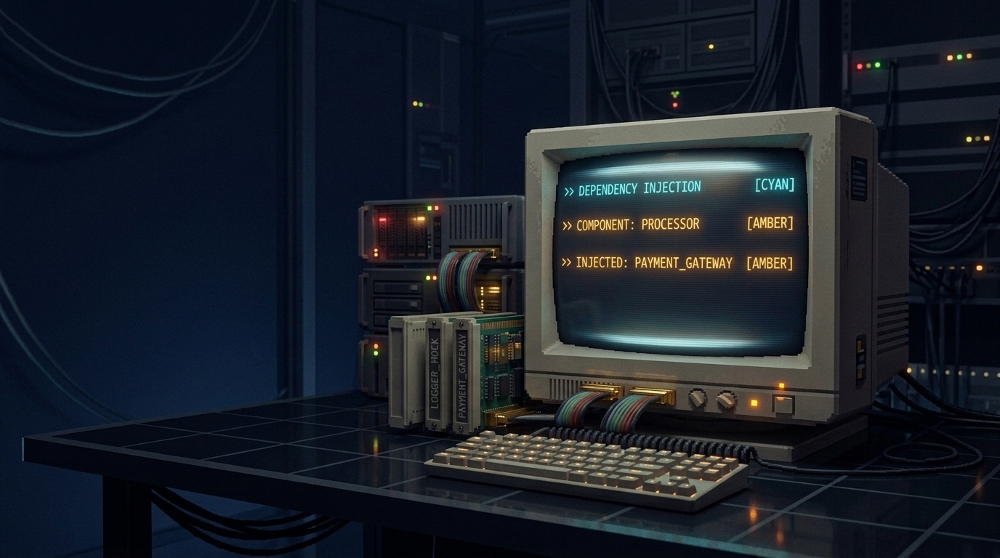

"Sistem tanpa contract testing adalah sistem yang menunda kegagalan integrasi produksinya sendiri."
Ketika Service A dan Service B masing-masing lulus unit test, integrasi mereka tetap bisa pecah di produksi karena provider mengubah format pesan tanpa koordinasi consumer. JSON tetap valid secara sintaksis, tetapi consumer menerima nilai null, error parsing, atau panic di runtime.
Tiga skenario kegagalan umum yang ditunjukkan oleh lab ini:
customer.name menjadi customer.full_name. Consumer yang memetakan name ke domain modelnya mendapat null.IN_PROGRESS menjadi in_progress. Response tetap 200 OK, tetapi perbandingan string di sisi klien gagal.total dari integer 150000 menjadi string "150000". Operasi matematika consumer error di runtime.Status hijau pada unit test bukan jaminan keamanan integrasi lintas batas layanan. Lab ini mengimplementasikan pipeline contract testing berbasis Go yang menangkap ketiga skenario tersebut sebelum deployment.
End-to-end test mensimulasikan seluruh alur sistem sehingga mahal untuk dijalankan setiap PR. Review manual pun tidak otomatis menemukan perubahan breaking karena developer fokus pada logika bisnis, bukan schema response. Contract testing mengisi celah ini dengan verifikasi otomatis sebelum deploy.
| Pendekatan | Kecepatan | Cakupan | Automasi |
|---|---|---|---|
| E2E Test | Lambat (menit) | Seluruh sistem | Partial — butuh environment |
| Manual Code Review | Lambat (jam) | Tidak lengkap | Tidak otomatis |
| Contract Testing | Cepat (sub-detik) | Field yang dipakai consumer | Penuh di CI |
Consumer-driven contract testing menggeser inisiatif ke consumer: mereka yang mendefinisikan apa yang dibutuhkan, bukan provider yang mendokumentasikan apa yang tersedia. Hanya pada jalur ini CI gate memblokir deployment ketika verification gagal, mencegah breaking change mencapai produksi.
Pilar 1 — Consumer Test: Consumer menulis test terhadap mock provider, menghasilkan file kontrak JSON minimal. Kontrak mendeklarasikan hanya field yang benar-benar dipakai.
Pilar 2 — Contract File: Artefak bersama berisi method, path, status code, header, dan body dengan tipe serta casing eksak.
Pilar 3 — Provider Verify: Verifier mengirim request sesuai kontrak ke provider dan membandingkan status, header, dan body sebagai subset.
Pilar 4 — Pass/Fail Gate: Ketika verifikasi lolos, deployment diizinkan. Ketika gagal, deployment diblokir dengan laporan diff terstruktur.
Pilar 5 — Safe Evolution: Dual provider routing mempertahankan V1 compliant sambil mengekspos skema V2 baru, memungkinkan migrasi consumer secara independen.
Pipeline ini dimulai dari consumer test yang menghasilkan artefak kontrak sebagai JSON. Kontrak kemudian diunduh oleh CI provider yang menjalankan verifier engine untuk membandingkan response aktual dengan ekspektasi. Keputusan gate dibuat secara deterministik berdasarkan hasil diff.
Consumer Test → Contract.json → CI Trigger → Verifier Engine → Gate Decision
(mock) (artifact) (fetch) (diff values) (pass/block)Stage 1: GenerateMobileContract() di internal/consumer/client.go menghasilkan kontrak minimal yang mendeklarasikan hanya id, status, customer.name, dan total.
Stage 2: Artefak kontrak JSON disimpan sebagai mobile-app-order-service.json.
Stage 3: Provider CI mengunduh kontrak dan memanggil Verifier.Verify(baseURL, contract).
Stage 4: diffValues() secara rekursif membandingkan expected vs actual: status code, header, dan body subset dengan json.Number untuk presisi tipe.
Stage 5: Keputusan gate — Passed=true menghasilkan ALLOWED; Passed=false menghasilkan BLOCKED dengan laporan error.
func GenerateMobileContract() *contract.Contract {
return &contract.Contract{
Consumer: "MobileApp",
Provider: "OrderService",
Interactions: []contract.Interaction{{
Description: "A request for order details by ID",
ProviderState: "Order ORD-123 exists and is IN_PROGRESS",
Request: contract.RequestDefinition{
Method: http.MethodGet,
Path: "/v1/orders/ORD-123",
},
Response: contract.ResponseDefinition{
Status: http.StatusOK,
Headers: map[string]string{
"Content-Type": "application/json",
},
Body: map[string]interface{}{
"id": "ORD-123",
"status": "IN_PROGRESS",
"customer": map[string]interface{}{
"name": "Budi Santoso",
},
"total": json.Number("150000"),
},
},
}},
}
}Fungsi ini menghasilkan kontrak minimal yang hanya mendeklarasikan field: id, status, customer.name, dan total. Field tambahan seperti notes atau created_at tidak dicantumkan karena tidak dipakai consumer — prinsip subset matching memastikan provider dapat berevolusi tanpa merusak kontrak.
Ketiga error ini dihasilkan oleh diffValues() di verifier.go. Perbedaan tipe numerik tertangkap berkat decoder.UseNumber() yang menjaga json.Number, berbeda dengan default decoder yang mengubah semua angka jadi float64. Field rename terdeteksi karena key tidak ditemukan di expected map.
| Jenis Error | Field | Expected | Actual |
|---|---|---|---|
| Type Mismatch | total |
json.Number (integer 150000) |
string ("150000") |
| Value Mismatch | status |
"IN_PROGRESS" | "in_progress" |
| Missing Field | customer.name |
Ada | Tidak ada (di-rename ke full_name) |
Verifier engine menggunakan pendekatan subset matching: hanya field yang dideklarasikan consumer yang diperiksa. Nested map traversal memungkinkan deteksi error di field dalam (seperti customer.name). UseNumber() adalah kunci yang membedakan integer dan string numerik — fitur yang tidak tersedia pada JSON parser default Go.
// Mekanisme diff inti di internal/contract/verifier.go
func diffValues(expected, actual interface{}, path string) []ContractError {
// 1. Status code check (semantik HTTP dulu)
// 2. Header validation (Content-Type harus cocok)
// 3. Perbandingan subset body rekursif
// - reflect.TypeOf untuk tipe primitif mismatch
// - ketidakhadiran key map untuk field rename
// - UseNumber() mempertahankan pembedaan integer vs string
}Lima komponen membuat engine ini bekerja:
decoder.UseNumber() — mengubah semua angka JSON jadi json.Number, membedakan integer 150000 dari string "150000".map[string]interface{} — body di-parse sebagai map generik, memungkinkan subset matching tanpa struct tag.reflect.TypeOf comparison — mendeteksi primitive type mismatch (string vs int) lewat reflection.customer.name vs customer.full_name.diffValues() return kosong, field opsional diabaikan verifier.Verifier tidak menggunakan shared mutable state manapun. Setiap panggilan Verify() menginisialisasi http.Client baru, membuat request baru, dan mengembalikan result baru. Race detector Go konfirmasi thread-safety melalui test concurrent 20 goroutine selama 0.01 detik.
| Pattern | Implementasi | Jaminan Keamanan |
|---|---|---|
| Per-goroutine Client | Verifier.NewVerifier() buat instance baru, timeout 5s |
Tidak ada shared mutable state |
| Request Isolation | http.NewRequest() per interaksi |
Objek unik per goroutine |
| Result Aggregation | Setiap goroutine kembalikan VerificationResult lokal |
Sync hanya di wg.Wait() |
| Race Detector PASS | go test -race ./... bersih dalam 1.425s |
Nol race flagged |
Pipeline contract testing menghasilkan tiga jalur keputusan: pass (deployment izin), fail (deployment blokir dengan error report), dan partial (beberapa kontrak gagal, sebagian lolos). Hanya pada jalur pass saja deployment diizinkan tanpa review tambahan.
Decision 1 — Passed? Semua interaction verification harus returning true. Hanya pada jalur ini deployment diizinkan tanpa intervensi manusia.
Decision 2 — Failed? Deployment diblokir. Error list harus ditinjau tim provider — bukan sekadar retry tanpa analisis.
Decision 3 — Partial? Beberapa interaction fail sementara sebagian pass. Tinjau per-interaction untuk mengisolasi scope perubahan breaking.
Logika keputusan ini berada dicmd/demo/main.go:14-68, di mana setiap stage mengeluarkan ALLOWED atau BLOCKED dengan laporan diff terstruktur.
[Stage 3] Running Breaking Provider Contract Verification:
Result: BLOCKED! Breaking changes detected before deployment:
1. [A request for order details by ID] path 'total':
type mismatch (expected 150000 [json.Number], got 150000 [string])
2. [A request for order details by ID] path 'status':
value mismatch (expected "IN_PROGRESS", got "in_progress")
3. [A request for order details by ID] missing expected field
'customer.name'
CI Deployment Gate: PREVENTED PRODUCTION OUTAGE.ProviderBreaking. Tiga error detail tercetak secara terstruktur, masing-masing menyebutkan path field, jenis mismatch, dan nilai yang diharapkan versus aktual. Gate CI menolak deployment — produksi terlindungi. Pelaporan error yang deterministik memberikan umpan balik yang dapat ditindaklanjuti kepada tim provider.
Sebelum contract testing, tim mengandalkan E2E test yang lambat dan manual debugging saat integrasi pecah. Setelah implementasi, setiap PR provider divalidasi terhadap kontrak consumer — breaking change tertangkap sebelum deploy. Tidak otomatis berarti semua edge case tertutup, tetapi risiko production outage berkurang signifikan.
| Sebelum Contract Testing | Sesudah Contract Testing |
|---|---|
| Deploy tanpa gate verifikasi kontrak | CI gate memverifikasi kontrak sebelum deploy |
| Production outage karena field rename | Breaking change terdeteksi di PR, error report jelas |
| Debug integration failure manual (lambat) | Verifikasi otomatis menghasilkan diff terstruktur per field |
| E2E test berjalan lambat dan flaky | Contract test cepat (sub-second) dan deterministic |
| Provider evolusi tanpa koordinasi consumer | Dual provider V1+V2 memungkinkan migrasi independen |
Tiga pola provider ini menggambarkan spektrum kompatibilitas. ProviderV1 adalah baseline compliant. ProviderBreaking menunjukkan skenario worst-case. ProviderDual merepresentasikan praktik evolusi aman: V1 dipertahankan untuk consumer lama, V2 diperkenalkan untuk consumer baru tanpa mengganggu yang sudah ada.
| Pola | Route | Behavior |
|---|---|---|
| ProviderV1 | /v1/orders/{id} |
Mengembalikan OrderResponseV1 compliant kontrak. Field notes ada tapi tidak divalidasi (subset matching). |
| ProviderBreaking | /v1/orders/{id} |
Mengembalikan OrderResponseBreaking dengan 3 mutasi: enum casing, field rename, type mutation. |
| ProviderDual | /v1/orders/{id} |
Mempertahankan V1 route compliant sambil menambahkan V2 route dengan schema baru + currency field. |
| ProviderDual | /v2/orders/{id} |
Respons V2: OrderResponseV2 dengan customer.full_name, total string, currency IDR. Belum ada kontrak consumer. |
Setiap struct merepresentasikan fase evolusi API. V1 adalah kontrak asli yang dipatuhi. Breaking adalah contoh deformasi kontrak yang harus ditangkap. V2 adalah arah evolusi yang sah — field rename dan type mutation diterima karena consumer V2 yang baru telah beradaptasi.
| Struct | JSON Tags | Validasi Kontrak |
|---|---|---|
OrderResponseV1 |
id, status, customer.Name, total(int64), notes,omitempty |
Compliant — semua field expected ada dengan tipe benar |
OrderResponseBreaking |
id, status(in_progress), customer.FullName, total(string), notes |
Melanggar kontrak — 3 breaking change |
OrderResponseV2 |
id, status(in_progress), customer.FullName, total(string), currency |
Schema baru — belum ada kontrak consumer, hanya assertion status |
=== RUN TestConsumerContractGeneration
--- PASS: TestConsumerContractGeneration (0.00s)
=== RUN TestProviderV1_ContractVerification_Success
--- PASS: TestProviderV1_ContractVerification_Success (0.00s)
=== RUN TestProviderBreaking_ContractVerification_Fails
--- PASS: TestProviderBreaking_ContractVerification_Fails (0.00s)
=== RUN TestProviderDual_ContractVerification_Success
--- PASS: TestProviderDual_ContractVerification_Success (0.00s)
=== RUN TestConcurrentContractVerification
--- PASS: TestConcurrentContractVerification (0.01s)
=== RUN TestVerifier_HeaderValidation_And_ErrorBranches
--- PASS: TestVerifier_HeaderValidation_And_ErrorBranches (0.00s)
=== RUN TestProviderDual_V2Endpoint_DirectAssertion
--- PASS: TestProviderDual_V2Endpoint_DirectAssertion (0.00s)
ok labs/26-contract-testing/tests 0.390s=== RUN TestConcurrentContractVerification
--- PASS: TestConcurrentContractVerification (0.01s)
ok labs/26-contract-testing/tests 1.425s
(race detector: no races detected)Laboratorium ini sengaja disederhanakan untuk reproduktibilitas lokal. Beberapa fitur produksi seperti Pact Broker, provider state callbacks, dan array diff tidak diimplementasikan. V2 endpoint hanya diverifikasi status code-nya, bukan body schema — ini adalah gap yang perlu ditambal untuk production readiness.
| Celah | Mengapa Penting | Langkah ke Produksi |
|---|---|---|
| Pact Broker Remote | Kontrak dipertukarkan in-memory; tidak ada broker sentral | Integrasikan Pact Broker untuk koordinasi lintas tim |
| Provider State Management | State didefinisikan via string polos; tidak ada callback setup/teardown | Tambah state fixture callbacks per interaction |
| Array Diff | diffValues() tidak menangani perbandingan array |
Implementasikan diff berbasis index atau multiset |
| Message Pact | Verifikasi terbatas pada HTTP REST saja | Tambah verifikasi pesan Kafka/RabbitMQ |
| V2 Schema Assertion | /v2/orders/{id} hanya assert status 200 |
Tambah kontrak body untuk endpoint V2 |
Laboratorium memilih custom verifier dengan Go standard library murni untuk menghindari dependensi Ruby atau Node.js. Kelebihannya: test berjalan di environment apa pun. Kekurangannya: tidak ada broker sentral, manajemen state manual, dan tidak support message pact. Untuk produksi skala kecil, custom verifier cukup.
| Aspek | Custom Verifier (Lab) | Full Pact Stack |
|---|---|---|
| Dependensi | Nol eksternal (stdlib saja) | Klien Ruby/JS, Pact Broker |
| Thread Safety | Race-safe by design | Perlu perhatian di broker |
| Portabilitas | Semua environment Go | Butuh runtime Ruby/Node |
| Broker Support | Tidak ada (in-memory saja) | Store kontrak terpusat |
| Message Pact | Tidak didukung | Didukung |
| Cocok Untuk | Tim kecil, CI gate lokal | Ekosistem multi-tim, multi-bahasa |
Checklist ini merangkum praktik terbaik contract testing. Poin terpenting: kontrak harus minimal dan berfokus pada field yang digunakan consumer. Over-specification adalah anti-pattern utama yang membuat kontrak terlalu rapuh dan menghambat evolusi provider.
Kelima anti-pattern ini umum terjadi saat tim baru mengadopsi contract testing. Over-specification adalah yang paling berbahaya karena membuat kontrak terlalu kaku. JSON Schema alone tidak cukup karena tidak menangkap semantik tipe seperti integer vs string numerik.
| Anti-Pattern | Cara Reproduksi |
|---|---|
| Over-specification | Tambahkan aturan bisnis (e.g., "username max 20 chars") ke kontrak. Provider yang melonggarkan validasi akan pecah kontrak tanpa dampak consumer. |
| Tidak bedakan additive vs breaking | Ubah total dari int jadi string tanpa update kontrak. Verifier harus gagal — jika lolos, matcher terlalu longgar. |
| Kontrak terlalu ketat | Deklarasikan semua field response (termasuk notes, created_at) sebagai required. Provider tambah field baru akan fail. |
| JSON Schema saja | Ganti diffValues dengan validator JSON Schema. Casing enum IN_PROGRESS vs in_progress akan lolos Schema valid. |
| Contract testing menggantikan unit test | Hapus semua unit test internal, hanya jalankan contract test. Logika bisnis tidak terverifikasi. |
Semua command di atas berjalan di Go standard library tanpa dependensi eksternal. Race detector mengonfirmasi thread-safety concurrent verification. Demo 4 stage memberikan bukti visual yang dapat direproduksi di mesin manapun.
# 1. Jalankan seluruh test suite dengan verbose
go test -v ./...
# 2. Jalankan race detector untuk verifikasi thread-safety
go test -race ./...
# 3. Eksekusi demo 4 stage (generate → V1 pass → breaking blocked → dual pass)
go run ./cmd/demo
# 4. Build binary untuk environment produksi
go build -o bin/contract-demo ./cmd/demoPrinsip pertama memastikan kontrak selalu berpusat pada consumer — bukan dokumentasi provider yang sering tertinggal. Prinsip kedua menempatkan gate di titik paling kritis: sebelum kode mencapai production. Prinsip ketiga menyediakan mekanisme evolusi tanpa disrupti.
Prinsip 1 — Consumer yang Mendorong Kontrak: Consumer menentukan ekspektasi minimal, bukan provider yang mendokumentasikan capability. Ini memastikan kontrak relevan dengan kebutuhan riil.
Prinsip 2 — Gate Sebelum Deploy: Verifikasi kontrak harus berjalan di CI sebelum merge. Tidak otomatis berarti semua kasus tercover, tetapi mengurangi risiko production outage secara signifikan.
Prinsip 3 — Dual Routing untuk Migrasi: Pertahankan V1 compliant sambil memperkenalkan V2. Consumer bermigrasi sesuai ritme masing-masing tanpa tekanan breaking change.
Kontrak consumer-driven, gate CI, dan dual routing membentuk triad evolusi API yang berkelanjutan.Sistem tanpa contract testing adalah sistem yang menunda kegagalan integrasi produksinya sendiri. Lab ini mengimplementasikan mesin contract testing minimal viable dalam Go murni yang mendemonstrasikan validasi tiga lapis (status, header, body diff dengan preservasi tipe), keamanan kon-kuren, dan keputusan gate CI yang deterministik.
Modul implementasi:
internal/consumer/client.go — MobileOrderClient & GenerateMobileContract()internal/contract/verifier.go — Verifier.Verify() & diffValues()internal/model/order.go — DTO OrderResponseV1/Breaking/V2internal/provider/server.go — Handler ProviderV1/Breaking/Dualcmd/demo/main.go — Orkestrator demo 4 stagetests/contract_test.go — 7 kasus ujiStatus verifikasi:
4a5cf38 · Status: APPROVEDgo test -race ./... PASS dalam 1.425s)Kode sumber lengkap, test suite, dan demo mandiri tersedia di repositori: github.com/lukman-ss/software-engineering-lab/tree/main/labs/26-contract-testing.